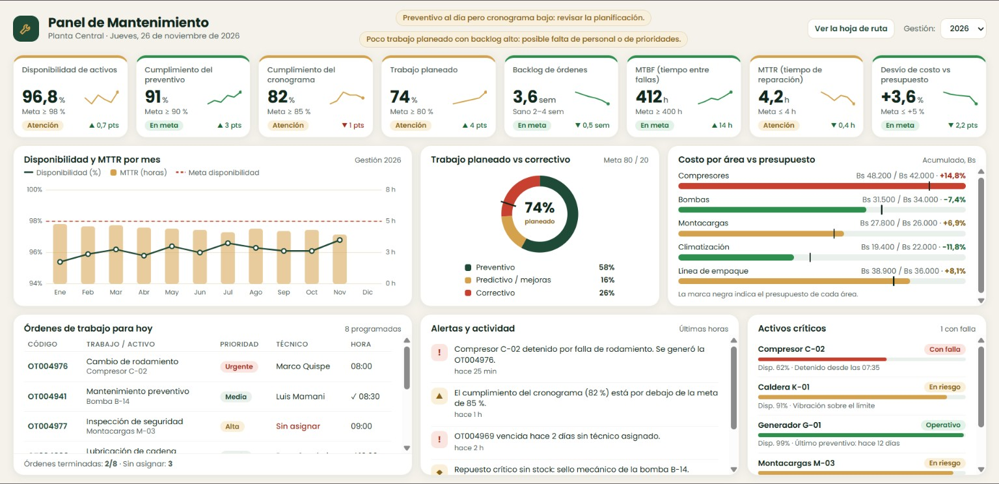

El camino del mantenimiento preventivo
Así creamos un dashboard de mantenimiento para tomar decisiones basadas en datos. Empezamos con una conversación sobre tu área y avanzamos en tres etapas: ordenar el registro, medir y dar seguimiento.

Quiénes somos
Soy Uziel Orozco, de Plexi Gestión. Ayudamos a pymes a mejorar la gestión de cada área con herramientas de ingeniería en calidad, para tomar mejores decisiones basadas en datos y avanzar en la mejora continua.
Este dashboard es una de las herramientas que integramos para que cada gerente pueda cumplir sus objetivos anuales.
Primera conversación
Antes de diseñar nada, necesitamos entender cómo trabaja hoy tu área de mantenimiento y qué pasos faltan para llegar al dashboard.
De qué hablamos
- Qué activos tienes y cuáles detienen la operación cuando fallan.
- Cómo se pide, se hace y se anota cada trabajo.
- Qué datos existen y dónde están: en papel, en planillas o en la memoria de los técnicos.
- Qué objetivos tiene el área este año.
- Quién va a leer los reportes y con qué frecuencia.
Dónde está hoy tu área
Ubicamos tu punto de partida: cuánto reacciona el área a las fallas y cuánto se anticipa a ellas.
| Qué cambia | Área reactiva | Área profesionalizada |
|---|---|---|
| Origen del trabajo | La falla | El plan preventivo |
| Historial | La memoria de cada técnico | Las órdenes de trabajo |
| Prioridades | La urgencia del momento | La criticidad de cada activo |
| Presupuesto | Se explica después de gastar | Se sigue mes a mes por área |
| Decisiones | Por intuición | Basadas en datos |
Resultado: un diagnóstico de tu área y la lista de pasos para crear el dashboard.
Registro documental y diseño del dashboard
Ordenamos la información del área y definimos qué debe mostrar el dashboard para cumplir los objetivos del año.
Registro documental
- Hacemos la lista de activos y le damos un código a cada uno.
- Definimos cuáles son críticos para la operación.
- Armamos el plan preventivo, con la frecuencia de cada tarea.
- Dejamos una sola orden de trabajo para todo, también para las urgencias.
Para ver cómo se conecta todo, sigamos una orden de ejemplo, la misma que aparece en el dashboard.
Cambio de rodamientoUrgente
- Activo
- Compresor C-02
- Tipo
- Correctivo
- Técnico
- Marco Quispe
- Equipo detenido desde
- 07:35
- Hora programada
- 08:00
- Fin de la reparación
- Se completa al cerrar
- Causa de la falla
- Se completa al cerrar
- Repuestos y costo
- Se completa al cerrar
Indicadores según los objetivos anuales
Un indicador entra al dashboard solo si ayuda a medir un objetivo del año. Por ejemplo:
| Objetivo anual | Indicadores que lo miden |
|---|---|
| Menos paros en los activos críticos | Disponibilidad y MTBF |
| Reparar más rápido | MTTR |
| Planificar en lugar de reaccionar | Trabajo planeado, cumplimiento del preventivo y del cronograma, y backlog |
| Cuidar el presupuesto | Desvío de costo por área |
Diseño del dashboard
Antes de construirlo, acordamos contigo qué se verá en pantalla:
- Cada indicador con su meta y su semáforo.
- La evolución mes a mes.
- El trabajo planeado frente al correctivo.
- El costo de cada área frente a su presupuesto.
- Las órdenes del día, las alertas y los activos críticos.
Pasamos a la etapa 2 cuando todo trabajo se registra en la misma orden, los indicadores responden a los objetivos del año y apruebas el diseño.
Medición de datos con KPIs
Con el registro en marcha, aplicamos los KPIs, o indicadores clave de desempeño, y medimos los procesos que alimentan el dashboard.
Qué se registra en cada paso del trabajo
| Paso | Datos que quedan en la orden |
|---|---|
| Solicitud | Qué falló, en qué activo y a qué hora |
| Planificación | Tipo, prioridad, técnico, fecha y horas estimadas |
| Ejecución | Inicio y fin del paro y de la reparación |
| Cierre | Causa de la falla, repuestos y costo |
Cómo se calcula cada indicador
Los indicadores se calculan con los datos de las órdenes. Si el registro es malo, la medición también.
| Indicador | Cómo se calcula | Meta | Qué hay que registrar |
|---|---|---|---|
| Disponibilidad de activos | (Tiempo programado − paros) ÷ tiempo programado × 100 | ≥ 98 % | Inicio y fin de cada paro |
| Cumplimiento del preventivo | Preventivos hechos a tiempo ÷ programados × 100 | ≥ 90 % | Tipo de orden, fecha programada y de cierre |
| Cumplimiento del cronograma | Órdenes ejecutadas en fecha ÷ planificadas × 100 | ≥ 85 % | Fecha planificada y de ejecución |
| Trabajo planeado | Órdenes planeadas ÷ totales × 100 | ≥ 80 % | Si la orden es planeada o correctiva |
| Backlog | Horas de órdenes abiertas ÷ horas semanales disponibles | 2 a 4 semanas | Horas estimadas por orden y horas del equipo |
| MTBF, tiempo entre fallas | Horas de operación ÷ número de fallas | ≥ 400 h | Horas de operación y cada falla |
| MTTR, tiempo de reparación | Horas de reparación ÷ número de reparaciones | ≤ 4 h | Inicio y fin de cada reparación |
| Desvío de costo | (Costo real ÷ presupuesto − 1) × 100 | ≤ +5 % | Costo por orden y presupuesto por área |
Qué aporta la OT004976
Esta sola orden mueve cinco indicadores: cuenta como falla para el MTBF, suma horas al MTTR, su paro baja la disponibilidad, al ser correctiva reduce el trabajo planeado y su costo pesa en el presupuesto de compresores.
Algunos indicadores avisan antes del problema, como el cumplimiento del preventivo. Otros muestran el resultado, como la disponibilidad.
Pasamos a la etapa 3 cuando los indicadores se calculan igual todos los meses, cada uno tiene meta y responsable, y hay un valor inicial con el que comparar.
Creación del dashboard y seguimiento
Reunimos los indicadores en una pantalla, con su meta, su semáforo y su tendencia. El gerente ya no revisa orden por orden: ve dónde está el desvío y entra a ese detalle.
Valores de demostración de la gestión 2026.
Abrir el dashboard completoCalidad de los datos
Con datos incompletos, las decisiones salen mal. Por eso revisamos periódicamente:
- Órdenes cerradas sin horas, causa o costo.
- Órdenes vencidas o sin técnico asignado.
- Órdenes preventivas y correctivas mal clasificadas.
- Fechas imposibles, como un cierre anterior al inicio.
- Trabajos hechos en activos sin código.
Seguimiento de reportes
| Frecuencia | Qué se revisa | Qué se decide |
|---|---|---|
| Cada día | Órdenes del día, alertas y activos detenidos | A quién asignar y qué va primero |
| Cada semana | Cronograma, backlog y calidad de los datos | Cómo planificar la semana siguiente |
| Cada mes | Disponibilidad, MTBF, MTTR y costos | Ajustes al plan preventivo, repuestos y gasto |
| Cada año | Cumplimiento de los objetivos | Metas e indicadores del año siguiente |
La etapa funciona cuando cada reporte se revisa a tiempo y cada desvío termina en una acción con responsable y plazo.
Mejores decisiones basadas en datos
Aquí está el objetivo del camino. El registro, los indicadores y el dashboard valen la pena cuando un número cambia lo que haces.
| Si el dashboard muestra | La decisión a evaluar |
|---|---|
| Preventivo en meta, pero cronograma bajo 85 % | Revisar cómo se planifica la semana |
| Trabajo planeado bajo 80 % y backlog de más de 3 semanas | Revisar el personal disponible y las prioridades |
| MTTR sobre 4 horas | Revisar el stock de repuestos, la capacitación y los datos de diagnóstico |
| Backlog de más de 6 semanas | Sumar capacidad o reprogramar el trabajo no crítico |
| Un área gasta más de 10 % sobre su presupuesto | Revisar sus activos: ajustar el plan o evaluar el reemplazo |
En el ejemplo, compresores acumula Bs 48.200 contra un presupuesto de Bs 42.000 y el C-02 está detenido. Con esos datos ya no basta con arreglarlo: toca investigar por qué falló el rodamiento, ajustar la frecuencia de su preventivo y tener el repuesto antes de la próxima falla.
Cada decisión genera trabajo nuevo, que vuelve a registrarse. Así, los datos mejoran con cada vuelta. Volver a la etapa 1